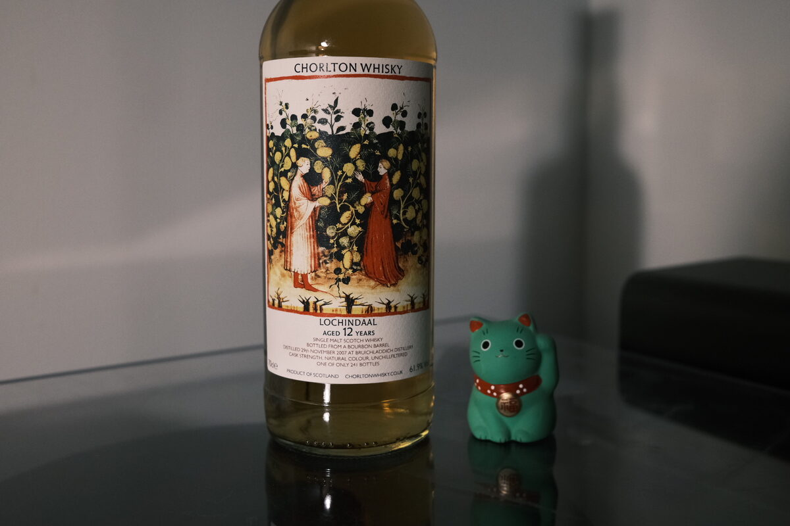

Lochindaal (Bruichladdich) 2007 Chorlton 12 years 61.9% (bourbon barrel)
Lochindaal was a peated spirit made by Bruichladdich shortly after they opened. More heavily peated than Port Charlotte. David says that it’s more like a peated Laddie spirit – it’s got that clarity we’d associate with it. I agree with him. Unfortunately, Bruichladdich is no longer making Lochindaal. Perhaps not a lost distillery, but a lost malt! Tasted virtually with David Bennett (Chorlton) and the Whisky and Alement team.
More Chorlton trivia: David runs the thing by himself, and got started by running his own tastings in Chorlton, Manchester. Then he bottled some cask ends, and the rest is history.
Colour Gold.
Nose Vanilla custard. Medicinal – elevated cough syrup. Umami: meaty and mushroomy. Seaweed and seawater near the beach. Very clean, austere spirit, very much akin to regular Bruichladdich. Fennel and aniseed. Honeyed and floral. A small yeasty, lactic, funky note. Salty.
Palate Deeply medicinal. Definitely elevated cough syrup. Syrupy in texture too, thick. Earthy, woody peat. Raspberry jellies, strawberries and cream. Jam and scones. Honey and fennel, carrying with it some ginger. A little acidity, lime juice. Herbal malt. Some citrus peel – don’t forget the pith. Oily. Smoke – and quite a lot of it at the tail end, leading into the finish.
Finish Mouth-filling smoke. It’s got volume. Very long. Warming. Ashy and earthy. Creamy. Tropical fruits: mangoes and bananas. Ice cream sundae. Very clear. Full, powerful.
Comments Creamy, smoky, medicinal spirit with a keen edge. Swims well. The bones are Bruichladdich. I simply cannot say anything bad about this malt. 92/100.

Posted by Dominic on 05 May 2021